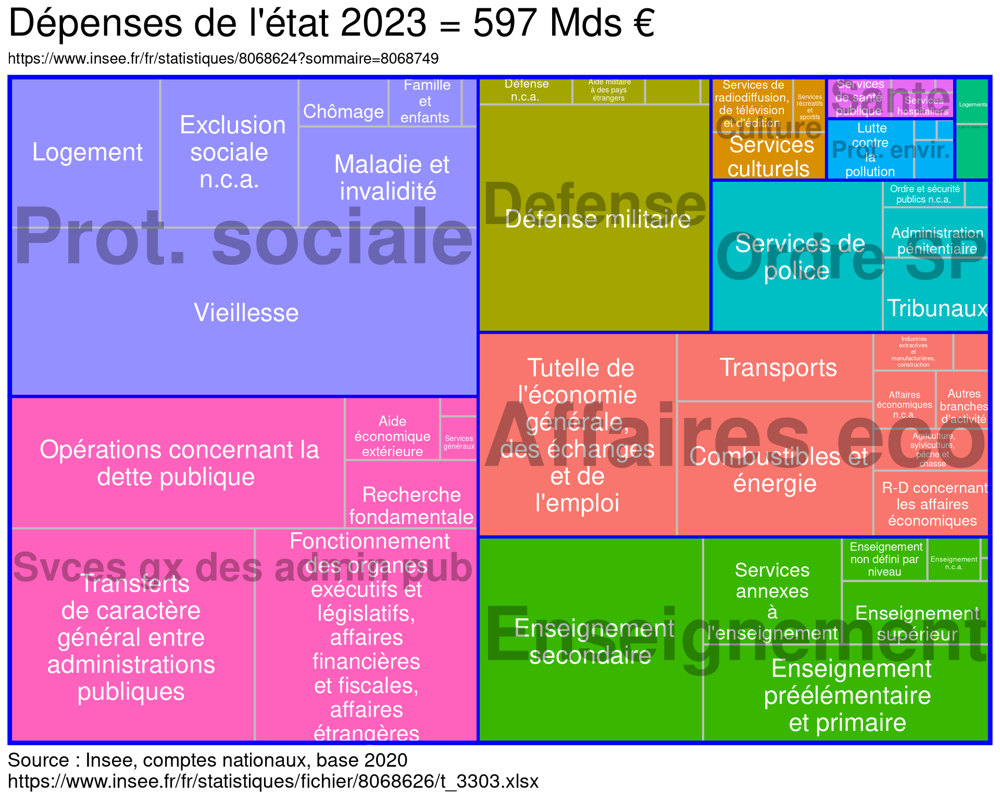

Méthode old school, par une url.
Bientôt, nous utiliserons Melodi
urldata = "https://www.insee.fr/fr/statistiques/fichier/8068626/t_3303.xlsx"
# download.file(url = urldata,
# mode = "wb",
# destfile = "~/data/insee/t_3303.xlsx")| code | lab |
|---|---|
| GF01 | 01 - Services généraux des administrations publiques |
| GF02 | 02 - Défense |
| GF03 | 03 - Ordre et sécurité publics |
| GF04 | 04 - Affaires économiques |
| GF05 | 05 - Protection de l’environnement |
| GF06 | 06 - Logements et équipements collectifs |
| GF07 | 07 - Santé |
| GF08 | 08 - Loisirs, culture et culte |
| GF09 | 09 - Enseignement |
| GF10 | 10 - Protection sociale |
| lab | value | part |
|---|---|---|
| 01 - Services généraux des administrations publiques | 148.4 | 24.9 |
| 10 - Protection sociale | 136.9 | 22.9 |
| 09 - Enseignement | 96.8 | 16.2 |
| 04 - Affaires économiques | 95.2 | 15.9 |
| 02 - Défense | 54.3 | 9.1 |
| 03 - Ordre et sécurité publics | 38.8 | 6.5 |
| 08 - Loisirs, culture et culte | 11.0 | 1.8 |
| 05 - Protection de l’environnement | 7.1 | 1.2 |
| 07 - Santé | 5.1 | 0.9 |
| 06 - Logements et équipements collectifs | 3.6 | 0.6 |
| Total | 597.2 | 100.0 |
